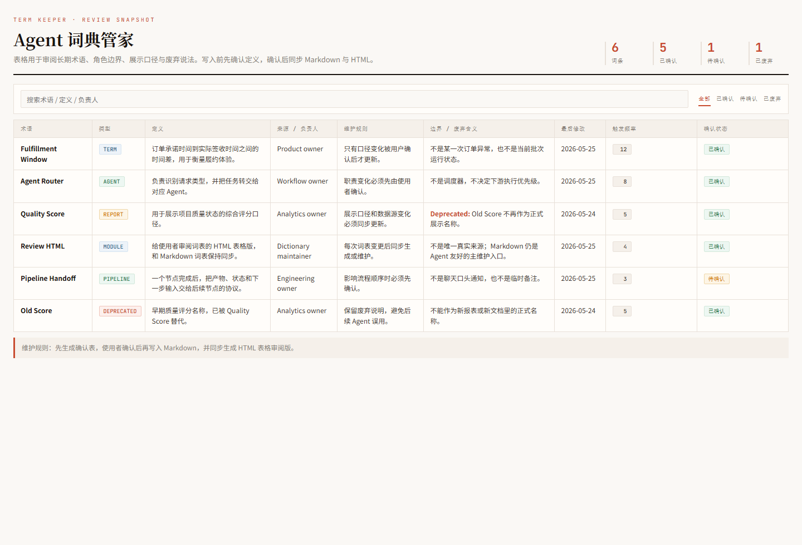
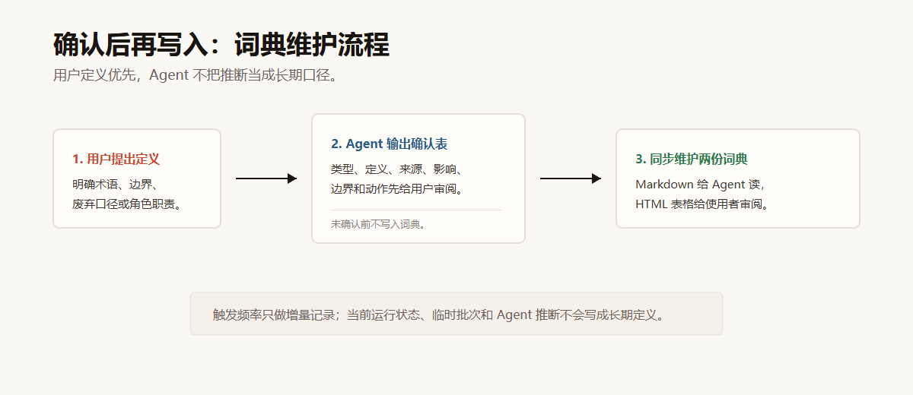

Term Keeper
Agent 词典管家
防止 Agent 在上下文压缩、跨会话协作或多 Agent 分工中忘记、误解、漂移项目关键定义。Markdown 给 Agent 读，HTML 表格给人审阅，定义类写入先确认再维护。
展示图


适用场景
当你发现 Agent 压缩上下文后忘记定义、对术语理解和你不一致、或者把临时运行状态当成长期概念时，就需要一个项目级词典维护 skill。
安装包位置
可安装的 skill 包位于仓库的 skill/term-keeper/。复制到 Codex skills 目录后即可使用。